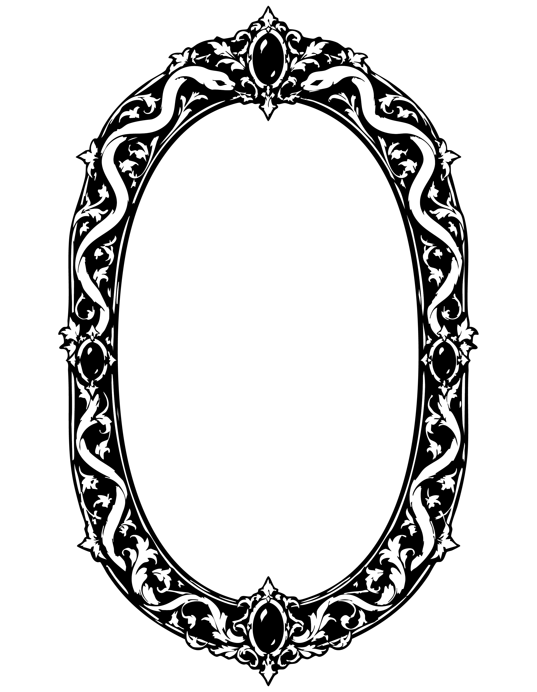
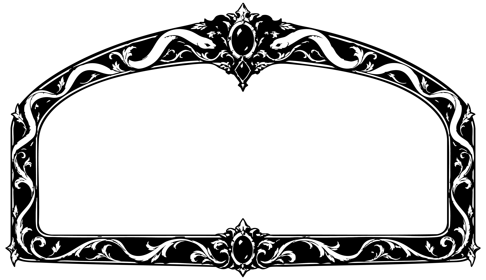

거울님은 오직 진실만을 말하십니다.

거울을 들여다 보세요.
거울님이 말씀하십니다.
웹캠 영역

▶ 수려한 얼굴을 가졌구나.
▶ 고마워요 거울님!
▶ 한번 더 듣고 싶어요!
거울님이 당신을 주시하고 있어요.
웹캠 영역
코가 장인이 심혈을 기울여 만든 조각상의 코처럼 아름답구나.
▶ 하하, 칭찬이 과하시네요!
▶ 조금 더 듣고 싶어요. 한번만 더!
거울님이 말씀에 귀 기울이세요.
웹캠 영역
당신의 얼굴로 태어났다면 좋았을텐데.
▶ 거울 앞을 떠나겠어요.
▶ 조금만 더요!
아직도 거울님을 보고 있나요?
웹캠 영역
제발, 당신의 얼굴을 갖기 위해서라면 독사과라도 삼키겠어요!!
▶ 거울 앞을 떠나겠어요!
▶ 이제는 그만둘 수 없어